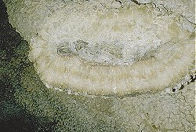

Dogtooth Spar
 |
| Image: two rare stalagmites with calcite crusts at the foot. |
|  |
|---|
| Image: Dogtooth Spars in Jewel Cave, SD, USA. |
Calcite (CaCO3) is an extremely variable mineral which can be found in an enormous number of different crystal forms. Dogtooth Spars are calcite crystals grown in the scalenohedral crystal form. This form is long, pointed, and resembles the canine teeth of a dog which explains the American name. Also it is quite common.
The name dogtooth spar normally implies a few things, which are not really obvious. This crystal form is quite common and often mixed with other crystal forms. Also it appears in a wide range of sizes, and obviously the small ones are more common than the big ones. So if a cave guide tells about dogtooth spars he actually means an exceptional place, with calcite crystals in the dogtooth spar form, without crystals of other forms and of extraordinary size. Such a patch of extraordinary crystals needs a long time to grow in undisturbed, calcite rich water. Conditions which are rare in caves, but they exist. They are rather common in vugs, so there are many calcite filled vugs with dogtooth spars.
In caves a quiet and undisturbed water body is rather common. So if there is a pool of water, probably continually supplied with calcite rich solution by dripping water, the growth of dogtooth spars starts. As they grow only inside the pool, there will be a horizontal border at the surface and no crystals above, which is called a water level mark. The crystal virtually cover everthing, the floor, the walls, and the speleothems in the water. Stalagmite often develop a sort of hedgehog-like form at the bottom, thin stalagmites with such a crystal ball at the bottom are sometimes called toilet brush by audacious or unfilially cavers.
So while such crystals are extremely common, they are normally quite small, lets say a few millimeters. To create 10cm long crystals an enormus amount of time in necessary, and such a long undisturbed phase is uncommon in a cave. In Jewel Cave, SD, USA the whole cave was filled with water to the ceiling, and this water was saturated with limestone. The result are probably the most exceptional dogtooth spars in the world, whch cover walls and ceiling.
 Dogtooth spar (visited: 03-Aug-2018)
Dogtooth spar (visited: 03-Aug-2018) Dog-tooth Spar, mindat.org (visited: 03-Aug-2018)
Dog-tooth Spar, mindat.org (visited: 03-Aug-2018)
{kind=link}